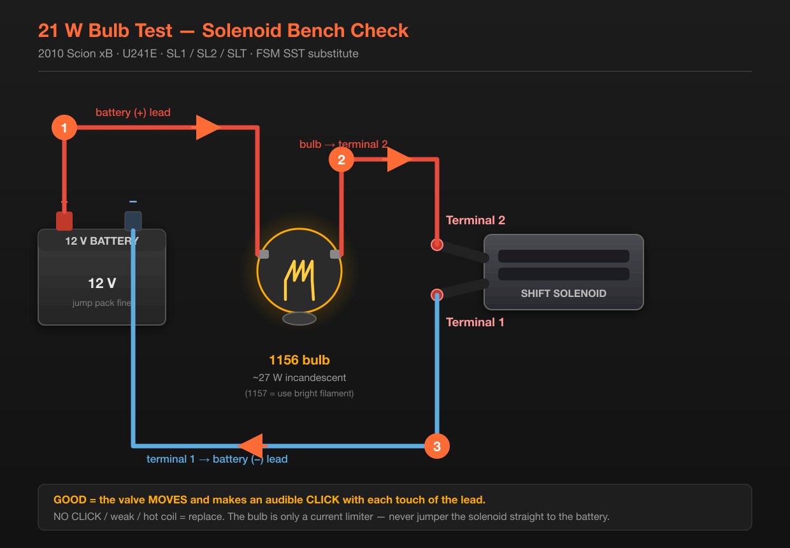

Three things in one pan-off session: drain & refill ATF, replace the ATF filter, and swap the SLT solenoid from a donor U241E into the installed transaxle.
The filter is an internal, pan-off part on this transaxle — which is exactly why book time is 1.9 h for fluid + filter vs. 1.1 h for fluid alone. Since you're already in the valve body, the solenoid swap is nearly free labor.
Three things in one pan-off session: drain & refill ATF, replace the ATF filter, and swap the SLT solenoid.
The filter is an internal, pan-off part on this transaxle — which is exactly why book time is 1.9 h for fluid + filter vs. 1.1 h for fluid alone. Since you're already in the valve body, the solenoid swap is nearly free labor.
Solenoids can be replaced new or reused from a donor transaxle — provided the donor unit had no solenoid-related faults. Test any incoming part before installing it (see Checks and Bulb Test).
| Item | Detail |
|---|---|
| Transaxle | U241E, 4-speed Super ECT |
| Active fault | Intermittent P2714 |
| When it trips | Hard acceleration |
| Workaround now | Clear code; returns under load |
| Part | Number | Notes |
|---|---|---|
| ATF filter | 35330-06010 | Internal, pan-off |
| ATF pan gasket | — | New required. Get it with the filter |
| ATF | ATF WS only | 3.7 qt for drain & refill — buy 5 qt |
| Oil filter | 90915-YZZF1 | For the oil change |
| Engine oil | 5W-20 / 0W-20 ILSAC | 4.5 qt with filter |
| Bulb (if needed) | 1156 or 1157 | You have these in the drawer |
| Part | Example brand / # | Maps to |
|---|---|---|
| SLT EPC solenoid | ROSTRA 520416 | SLT — the one you need |
| S1 + S2 shift | WELLS 2N1186 ×2 | SL1 / SL2 |
| SL lockup | ROSTRA 520377 | Lockup |
The SLT circuit is testable from outside the transaxle at the B20 transmission wire connector. Car on the ground, no fluid spilled. If it reads bad, you've confirmed the solenoid before starting.
Measured at 20 °C (68 °F).
| Solenoid | Test points | Spec |
|---|---|---|
| SL1 | terminal 1 – 2 | 5.0 – 5.6 Ω |
| SL2 | terminal 1 – 2 | 5.0 – 5.6 Ω |
| SLT | terminal 1 – 2 | 5.0 – 5.6 Ω |
| DSL | connector – solenoid body | 11 – 13 Ω |
| S4 | connector – solenoid body | 11 – 15 Ω |

| Symptom | Meaning |
|---|---|
| No click at all | Coil open or valve seized — replace |
| Clicks sometimes, dead other times | Intermittent — replace, this is your P2714 |
| Weak click, sluggish movement | Weak coil or gummy valve — replace |
| Coil gets hot fast | Shorted turns — replace |
| Bulb barely glows | Circuit restricted — check leads and connections |
SLT is a linear PWM solenoid at roughly 5.3 Ω. Straight across a 12.6 V battery that's ~2.4 A and ~30 W into a coil the ECM only ever drives at duty cycle. Hold it on straight DC and you can cook the winding you're trying to test.
The bulb is a current limiter — series resistance that drops the voltage so the valve still strokes but the coil survives. That's the entire reason the FSM specifies it.
| Option | Notes |
|---|---|
| 1156 / 1157 bulb | Best. 1156 ≈ 27 W; 1157 also ≈ 27 W on the bright filament |
| 3156 / 3157 bulb | Electrically identical to 1156/1157 (both ~27 W). Base differs: plastic wedge instead of bayonet |
| Bench supply w/ current limit | Cleanest if you have one — set ~0.5–1 A |
| ~6 Ω / 25 W power resistor | Works, less friendly |
SL1 / SL2 / SLT have two pins — the coil sits between them. Test 1↔2, expect 5.0–5.6 Ω.
DSL (lock-up / torque converter clutch) and S4 have only one pin — the coil grounds through the solenoid body. That single terminal is correct, not a broken connector.
| Solenoid | Test | Spec @ 20 °C |
|---|---|---|
| SL1 · SL2 · SLT | terminal 1 ↔ terminal 2 | 5.0 – 5.6 Ω |
| DSL (lock-up) | terminal ↔ solenoid body | 11 – 13 Ω |
| S4 | terminal ↔ solenoid body | 11 – 15 Ω |
DSL and S4 need no bulb. The bulb exists only to drag the ~5 Ω solenoids down to about 1 A. A ~12 Ω coil already does that by itself — straight across 12.6 V it draws ~1.05 A, the same place the bulb lands SLT. So connect battery + to the terminal and battery − to the body, tap, and listen for the click.
The solenoids are physically similar and the connectors are the giveaway. Use the wiring difference:
| Fastener | Nm | ft-lbf | in-lbf |
|---|---|---|---|
| SLT to valve body | 6.6 | — | 58 |
| SL1 / SL2 to valve body | 11 | 8 | — |
| DSL / S4 to valve body | 11 | 8 | — |
| Valve body to transaxle | 11 | 8 | — |
| Oil strainer to valve body | 11 | 8 | — |
| Oil pan to transaxle case | 7.8 | — | 69 |
| Transmission wire to case | 5.4 | — | 48 |
| ATF temp sensor to lock plate | 6.6 | — | 58 |
| Drain plug | 49 | 36 | — |
| Code | Type | Meaning |
|---|---|---|
| P2714 | Performance | Clutch slip detected — turbine vs. output speed mismatch |
| P2716 | Electrical | Open or short in the SLT circuit |
Both point at Shift Solenoid Valve SLT, the line-pressure (EPC) solenoid. Yours is P2714.
You're doing both at once, which sidesteps the gamble — but it also means if the code returns, you'll want to know which change did what. Note the fluid condition and debris in the pan when you're in there. That tells you whether this was dirty fluid or a failing part.